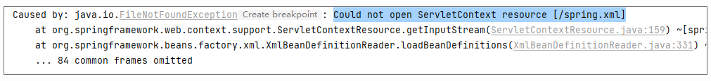
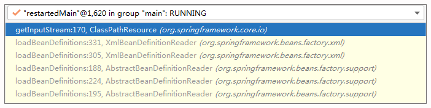
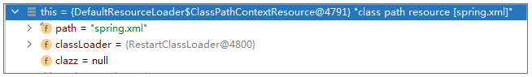
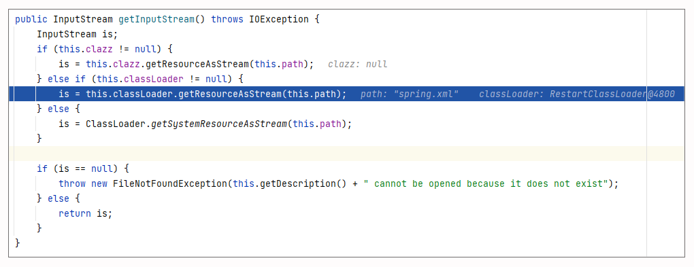
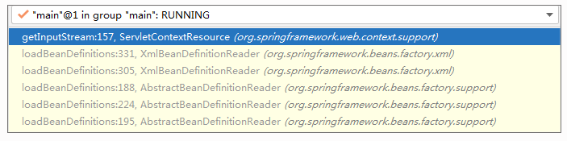
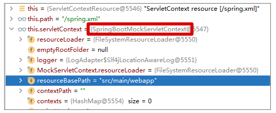
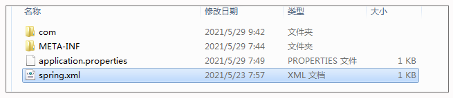
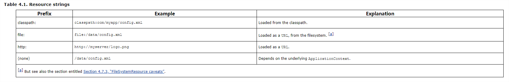
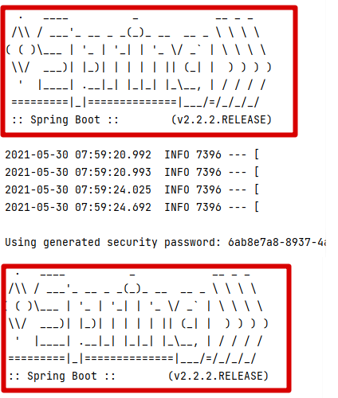
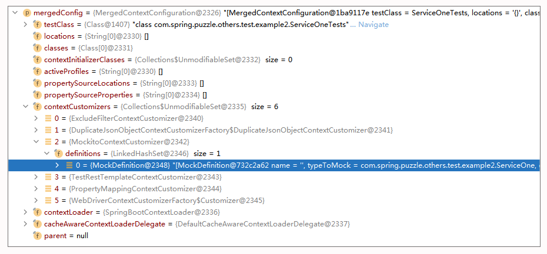

- 00 导读 5分钟轻松了解Spring基础知识.md.html
- 00 开篇词 贴心“保姆”Spring罢工了怎么办？.md.html
- 01 Spring Bean 定义常见错误.md.html
- 02 Spring Bean 依赖注入常见错误（上）.md.html
- 03 Spring Bean 依赖注入常见错误（下）.md.html
- 04 Spring Bean 生命周期常见错误.md.html
- 05 Spring AOP 常见错误（上）.md.html
- 06 Spring AOP 常见错误（下）.md.html
- 07 Spring事件常见错误.md.html
- 08 答疑现场：Spring Core 篇思考题合集.md.html
- 09 Spring Web URL 解析常见错误.md.html
- 10 Spring Web Header 解析常见错误.md.html
- 11 Spring Web Body 转化常见错误.md.html
- 12 Spring Web 参数验证常见错误.md.html
- 13 Spring Web 过滤器使用常见错误（上）.md.html
- 14 Spring Web 过滤器使用常见错误（下）.md.html
- 15 Spring Security 常见错误.md.html
- 16 Spring Exception 常见错误.md.html
- 17 答疑现场：Spring Web 篇思考题合集.md.html
- 18 Spring Data 常见错误.md.html
- 19 Spring 事务常见错误（上）.md.html
- 20 Spring 事务常见错误（下）.md.html
- 21 Spring Rest Template 常见错误.md.html
- 22 Spring Test 常见错误.md.html
- 23 答疑现场：Spring 补充篇思考题合集.md.html
- 导读 5分钟轻松了解一个HTTP请求的处理过程.md.html
- 知识回顾 系统梳理Spring编程错误根源.md.html
- 结束语 问题总比解决办法多.md.html
- 捐赠
22 Spring Test 常见错误
你好，我是傅健。
前面我们介绍了许多 Spring 常用知识点上的常见应用错误。当然或许这些所谓的常用，你仍然没有使用，例如对于 Spring Data 的使用，有的项目确实用不到。那么这一讲，我们聊聊 Spring Test，相信你肯定绕不开对它的使用，除非你不使用 Spring 来开发程序，或者你使用了 Spring 但是你不写测试。但话说回来，后者的情况就算你想如此，你的老板也不会同意吧。
那么在 Spring Test 的应用上，有哪些常见错误呢？这里我给你梳理了两个典型，闲话少叙，我们直接进入这一讲的学习。
案例 1：资源文件扫描不到
首先，我们来写一个 HelloWorld 版的 Spring Boot 程序以做测试备用。
先来定义一个 Controller：
@RestController
public class HelloController {
@Autowired
HelloWorldService helloWorldService;
@RequestMapping(path = "hi", method = RequestMethod.GET)
public String hi() throws Exception{
return helloWorldService.toString() ;
};
}
当访问 http://localhost:8080/hi 时，上述接口会打印自动注入的HelloWorldService类型的 Bean。而对于这个 Bean 的定义，我们这里使用配置文件的方式进行。
- 定义 HelloWorldService，具体到 HelloWorldService 的实现并非本讲的重点，所以我们可以简单实现如下：
public class HelloWorldService {
}
- 定义一个 spring.xml，在这个 XML 中定义 HelloWorldServic 的Bean，并把这个 spring.xml 文件放置在/src/main/resources 中：
<?xml version="1.0" encoding="UTF-8"?>
<beans xmlns="http://www.springframework.org/schema/beans"
xmlns:xsi="http://www.w3.org/2001/XMLSchema-instance"
xsi:schemaLocation="http://www.springframework.org/schema/beans http://www.springframework.org/schema/beans/spring-beans.xsd">
<bean id="helloWorldService" class="com.spring.puzzle.others.test.example1.HelloWorldService">
</bean>
</beans>
- 定义一个 Configuration 引入上述定义 XML，具体实现方式如下：
@Configuration
@ImportResource(locations = {"spring.xml"})
public class Config {
}
完成上述步骤后，我们就可以使用 main() 启动起来。测试这个接口，一切符合预期。那么接下来，我们来写一个测试：
@SpringBootTest()
class ApplicationTests {
@Autowired
public HelloController helloController;
@Test
public void testController() throws Exception {
String response = helloController.hi();
Assert.notNull(response, "not null");
}
}
当我们运行上述测试的时候，会发现测试失败了，报错如下：

为什么单独运行应用程序没有问题，但是运行测试就不行了呢？我们需要研究一下 Spring 的源码，来找找答案。
案例解析
在了解这个问题的根本原因之前，我们先从调试的角度来对比下启动程序和测试加载spring.xml的不同之处。
- 启动程序加载spring.xml
首先看下调用栈：

可以看出，它最终以 ClassPathResource 形式来加载，这个资源的情况如下：

而具体到加载实现，它使用的是 ClassPathResource#getInputStream 来加载spring.xml文件：

从上述调用及代码实现，可以看出最终是可以加载成功的。
- 测试加载spring.xml
首先看下调用栈：

可以看出它是按 ServletContextResource 来加载的，这个资源的情况如下：

具体到实现，它最终使用的是 MockServletContext#getResourceAsStream 来加载文件：
@Nullable
public InputStream getResourceAsStream(String path) {
String resourceLocation = this.getResourceLocation(path);
Resource resource = null;
try {
resource = this.resourceLoader.getResource(resourceLocation);
return !resource.exists() ? null : resource.getInputStream();
} catch (IOException | InvalidPathException var5) {
if (this.logger.isWarnEnabled()) {
this.logger.warn("Could not open InputStream for resource " + (resource != null ? resource : resourceLocation), var5);
}
return null;
}
}
你可以继续跟踪它的加载位置相关代码，即 getResourceLocation()：
protected String getResourceLocation(String path) {
if (!path.startsWith("/")) {
path = "/" + path;
}
//加上前缀：/src/main/resources
String resourceLocation = this.getResourceBasePathLocation(path);
if (this.exists(resourceLocation)) {
return resourceLocation;
} else {
//{"classpath:META-INF/resources", "classpath:resources", "classpath:static", "classpath:public"};
String[] var3 = SPRING_BOOT_RESOURCE_LOCATIONS;
int var4 = var3.length;
for(int var5 = 0; var5 < var4; ++var5) {
String prefix = var3[var5];
resourceLocation = prefix + path;
if (this.exists(resourceLocation)) {
return resourceLocation;
}
}
return super.getResourceLocation(path);
}
}
你会发现，它尝试从下面的一些位置进行加载：
classpath:META-INF/resources
classpath:resources
classpath:static
classpath:public
src/main/webapp
如果你仔细看这些目录，你还会发现，这些目录都没有spring.xml。或许你认为源文件src/main/resource下面不是有一个 spring.xml 么？那上述位置中的classpath:resources不就能加载了么？
那你肯定是忽略了一点：当程序运行起来后，src/main/resource 下的文件最终是不带什么resource的。关于这点，你可以直接查看编译后的目录（本地编译后是 target\classes 目录），示例如下：

所以，最终我们在所有的目录中都找不到spring.xml，并且会报错提示加载不了文件。报错的地方位于 ServletContextResource#getInputStream 中：
@Override
public InputStream getInputStream() throws IOException {
InputStream is = this.servletContext.getResourceAsStream(this.path);
if (is == null) {
throw new FileNotFoundException("Could not open " + getDescription());
}
return is;
}
问题修正
从上述案例解析中，我们了解到了报错的原因，那么如何修正这个问题？这里我们可以采用两种方式。
- 在加载目录上放置 spring.xml
就本案例而言，加载目录有很多，所以修正方式也不少，我们可以建立一个 src/main/webapp，然后把 spring.xml 复制一份进去就可以了。也可以在/src/main/resources 下面再建立一个 resources 目录，然后放置进去也可以。
- 在 @ImportResource 使用classpath加载方式
@Configuration
//@ImportResource(locations = {"spring.xml"})
@ImportResource(locations = {"classpath:spring.xml"})
public class Config {
}
这里，我们可以通过 Spring 的官方文档简单了解下不同加载方式的区别，参考 https://docs.spring.io/spring-framework/docs/2.5.x/reference/resources.html：

很明显，我们一般都不会使用本案例的方式（即locations = {“spring.xml”}，无任何“前缀”的方式），毕竟它已经依赖于使用的 ApplicationContext。而 classPath 更为普适些，而一旦你按上述方式修正后，你会发现它加载的资源已经不再是 ServletContextResource，而是和应用程序一样的 ClassPathResource，这样自然可以加载到了。
所以说到底，表面上看，这个问题是关于测试的案例，但是实际上是 ImportResource 的使用问题。不过通过这个案例，你也会明白，很多用法真的只能在某个特定场合才能工作起来，你只是比较幸运而已。
案例 2：容易出错的Mock
接下来，我们再来看一个非功能性的错误案例。有时候，我们会发现 Spring Test 运行起来非常缓慢，寻根溯源之后，你会发现主要是因为很多测试都启动了Spring Context，示例如下：

那么为什么有的测试会多次启动 Spring Context？在具体解析这个问题之前，我们先模拟写一个案例来复现这个问题。
我们先在 Spring Boot 程序中写几个被测试类：
@Service
public class ServiceOne {
}
@Service
public class ServiceTwo {
}
然后分别写出对应的测试类：
@SpringBootTest()
class ServiceOneTests {
@MockBean
ServiceOne serviceOne;
@Test
public void test(){
System.out.println(serviceOne);
}
}
@SpringBootTest()
class ServiceTwoTests {
@MockBean
ServiceTwo serviceTwo;
@Test
public void test(){
System.out.println(serviceTwo);
}
}
在上述测试类中，我们都使用了@MockBean。写完这些程序，批量运行测试，你会发现Spring Context 果然会被运行多次。那么如何理解这个现象，是错误还是符合预期？接下来我们具体来解析下。
案例解析
当我们运行一个测试的时候，正常情况是不会重新创建一个 Spring Context 的。这是因为 Spring Test 使用了 Context 的缓存以避免重复创建 Context。那么这个缓存是怎么维护的呢？我们可以通过DefaultCacheAwareContextLoaderDelegate#loadContext来看下 Context 的获取和缓存逻辑：
public ApplicationContext loadContext(MergedContextConfiguration mergedContextConfiguration) {
synchronized(this.contextCache) {
ApplicationContext context = this.contextCache.get(mergedContextConfiguration);
if (context == null) {
try {
context = this.loadContextInternal(mergedContextConfiguration);
//省略非关键代码
this.contextCache.put(mergedContextConfiguration, context);
} catch (Exception var6) {
//省略非关键代码
}
} else if (logger.isDebugEnabled()) {
//省略非关键代码
}
this.contextCache.logStatistics();
return context;
}
}
从上述代码可以看出，缓存的 Key 是 MergedContextConfiguration。所以一个测试要不要启动一个新的 Context，就取决于根据这个测试 Class 构建的 MergedContextConfiguration 是否相同。而是否相同取决于它的 hashCode() 实现：
public int hashCode() {
int result = Arrays.hashCode(this.locations);
result = 31 * result + Arrays.hashCode(this.classes);
result = 31 * result + this.contextInitializerClasses.hashCode();
result = 31 * result + Arrays.hashCode(this.activeProfiles);
result = 31 * result + Arrays.hashCode(this.propertySourceLocations);
result = 31 * result + Arrays.hashCode(this.propertySourceProperties);
result = 31 * result + this.contextCustomizers.hashCode();
result = 31 * result + (this.parent != null ? this.parent.hashCode() : 0);
result = 31 * result + nullSafeClassName(this.contextLoader).hashCode();
return result;
}
从上述方法，你可以看出只要上述元素中的任何一个不同都会导致一个 Context 会重新创建出来。关于这个缓存机制和 Key 的关键因素你可以参考 Spring 的官方文档，也有所提及，这里我直接给出了链接，你可以对照着去阅读。
现在回到本案例，为什么会创建一个新的 Context 而不是复用？根源在于两个测试的contextCustomizers这个元素的不同。如果你不信的话，你可以调试并对比下。
ServiceOneTests 的 MergedContextConfiguration 示例如下：

ServiceTwoTests 的 MergedContextConfiguration 示例如下：

很明显，MergedContextConfiguration（即 Context Cache 的 Key）的 ContextCustomizer 是不同的，所以 Context 没有共享起来。而追溯到 ContextCustomizer 的创建，我们可以具体来看下。
当我们运行一个测试（testClass）时，我们会使用 MockitoContextCustomizerFactory#createContextCustomizer 来创建一个 ContextCustomizer，代码示例如下：
class MockitoContextCustomizerFactory implements ContextCustomizerFactory {
MockitoContextCustomizerFactory() {
}
public ContextCustomizer createContextCustomizer(Class<?> testClass, List<ContextConfigurationAttributes> configAttributes) {
DefinitionsParser parser = new DefinitionsParser();
parser.parse(testClass);
return new MockitoContextCustomizer(parser.getDefinitions());
}
}
创建的过程是由 DefinitionsParser 来解析这个测试 Class（例如案例中的 ServiceOneTests），如果这个测试 Class 中包含了 MockBean 或者 SpyBean 标记的情况，则将对应标记的情况转化为 MockDefinition，最终添加到 ContextCustomizer 中。解析的过程参考 DefinitionsParser#parse：
void parse(Class<?> source) {
this.parseElement(source);
ReflectionUtils.doWithFields(source, this::parseElement);
}
private void parseElement(AnnotatedElement element) {
MergedAnnotations annotations = MergedAnnotations.from(element, SearchStrategy.SUPERCLASS);
//MockBean 处理 annotations.stream(MockBean.class).map(MergedAnnotation::synthesize).forEach((annotation) -> {
this.parseMockBeanAnnotation(annotation, element);
});
//SpyBean 处理 annotations.stream(SpyBean.class).map(MergedAnnotation::synthesize).forEach((annotation) -> {
this.parseSpyBeanAnnotation(annotation, element);
});
}
private void parseMockBeanAnnotation(MockBean annotation, AnnotatedElement element) {
Set<ResolvableType> typesToMock = this.getOrDeduceTypes(element, annotation.value());
//省略非关键代码
Iterator var4 = typesToMock.iterator();
while(var4.hasNext()) {
ResolvableType typeToMock = (ResolvableType)var4.next();
MockDefinition definition = new MockDefinition(annotation.name(), typeToMock, annotation.extraInterfaces(), annotation.answer(), annotation.serializable(), annotation.reset(), QualifierDefinition.forElement(element));
//添加到 DefinitionsParser#definitions
this.addDefinition(element, definition, "mock");
}
}
那说了这么多，Spring Context 重新创建的根本原因还是在于使用了@MockBean 且不同，从而导致构建的 MergedContextConfiguration 不同，而 MergedContextConfiguration 正是作为 Cache 的 Key，Key 不同，Context 不能被复用，所以被重新创建了。这就是为什么在案例介绍部分，你会看到多次 Spring Context 的启动过程。而正因为“重启”，测试速度变缓慢了。
问题修正
到这，你会发现其实这种缓慢的根源是使用了@MockBean 带来的一个正常现象。但是假设你非要去提速下，那么你可以尝试使用 Mockito 去手工实现类似的功能。当然你也可以尝试使用下面的方式来解决，即把相关的 MockBean 都定义到一个地方去。例如针对本案例，修正方案如下：
public class ServiceTests {
@MockBean
ServiceOne serviceOne;
@MockBean
ServiceTwo serviceTwo;
}
@SpringBootTest()
class ServiceOneTests extends ServiceTests{
@Test
public void test(){
System.out.println(serviceOne);
}
}
@SpringBootTest()
class ServiceTwoTests extends ServiceTests{
@Test
public void test(){
System.out.println(serviceTwo);
}
}
重新运行测试，你会发现 Context 只会被创建一次，速度也有所提升了。相信，你也明白这么改能工作的原因了，现在每个测试对应的 Context 缓存 Key 已经相同了。
重点回顾
通过以上两个案例，相信你对 Spring Test 已经有了进一步的了解，最后总结下重点。
在使用 Spring Test 的时候，一定要注意资源文件的加载方式是否正确。例如，你使用的是绝对路径，形式如下：
@ImportResource(locations = {"spring.xml"})
那么它可能在不同的场合实现不同，不一定能加载到你想要的文件，所以我并不推荐你在使用 @ImportResource 时，使用绝对路径指定资源。
另外，@MockBean 可能会导致 Spring Context 反复新建，从而让测试变得缓慢，从根源上看，这是属于正常现象。不过你一定要意识到这点，否则，你可能会遇到各种难以理解的现象。
而假设你需要加速，你可以尝试多种方法，例如，你可以把依赖 Mock 的 Bean 声明在一个统一的地方。当然，你要格外注意这样是否还能满足你的测试需求。
思考题
在案例 1 中，我们解释了为什么测试程序加载不到 spring.xml 文件，根源在于当使用下面的语句加载文件时，它们是采用不同的 Resource 形式来加载的：
@ImportResource(locations = {"spring.xml"})
具体而言，应用程序加载使用的是 ClassPathResource，测试加载使用的是 ServletContextResource，那么这是怎么造成的呢？
期待你的思考，我们留言区见！
© 2019 - 2023 Liangliang Lee. Powered by gin and hexo-theme-book.